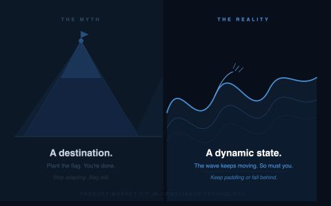

Product-Market Fit is Surfing a Wave, Not Climbing a Summit
Published on September 20, 2026

Product-market fit (PMF) is not a climb to the summit. It's surfing a forever adjusting wave (especially in the AI-age).
The initial build may well feel like a climb to the summit, but that doesn't mean the product is forever complete. Instead, the market shifts expectations, new requirements emerge, and new tools become available.
The regulatory landscape shifts. A new typology emerges. A jurisdiction tightens its requirements. The bank that was adequate eighteen months ago now has a gap. The wave has moved.
The vendors who treat PMF as a destination stop adapting. The product that fit the problem in 2022 was built for a threat model from 2021. Meanwhile, FATF is rewriting its fraud priorities, agentic AI is changing what's operationally possible, and your examiner has read guidance your vendor hasn't.
You don't plant a flag in financial crime compliance. The moment you stop paddling, the wave passes you.
For anyone evaluating compliance technology: ask your vendor what they shipped in the last six months (or better yet, the last 2 months) that they didn't have on their roadmap eighteen months ago. The answer tells you whether they're surfing or standing on a summit they climbed three years ago.